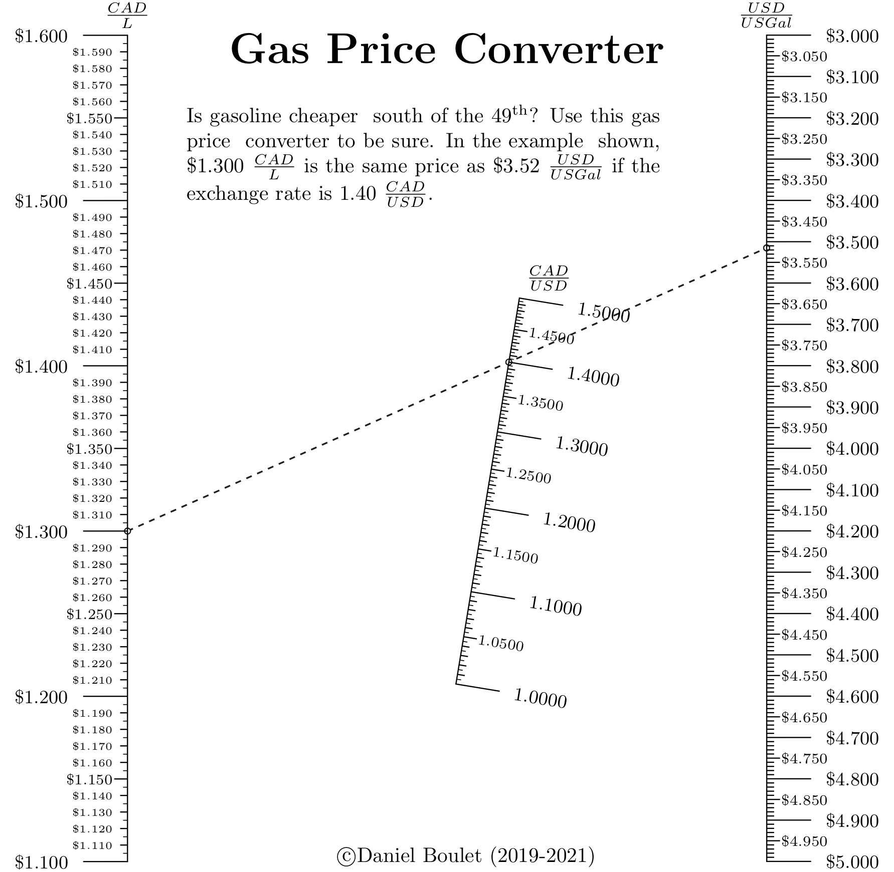

Gasoline Price comparison¶
Background¶
Comparing the unit price of a commodity with different units of measure and currencies is greatly simplified with a nomograph. In this example. cross border travellers between the United States and Canada can easily compare the cost of gasoline on both sides of the border. Moreover, by drawing an isopleth thorough the currency rate at par (1.0000) they can directly convert dollars per litre to dollars per USG. This nomograph implements the following formula:
\(\frac{CAD}{L} = \frac{CAD}{USD} \times \frac{USD}{US Gal} \div \frac{L}{US Gal}\)
This equation follows the form of a Type 2 nomograph where:
\(F_1(u_1) = \frac{CAD}{L}\),
\(F_2(u_2) = \frac{CAD}{USD}\)
and
\(F_3(u_3) = \frac{USD}{US Gal} \div 3.78541 \frac{L}{US Gal}\)
Generated nomograph¶
Source code¶
1"""
2 ex_gasoline_pricing.py
3
4 Gasoline price converter
5"""
6
7from pynomo.nomographer import *
8import sys
9from pyx import *
10
11sys.path.insert(0, "..")
12
13# allows use of latex commands in PyX such as \frac{a}{b} and \par
14pyx.text.set(text.LatexEngine)
15
16N_params_1 = {
17 "u_min": 1.1,
18 "u_max": 1.6,
19 "function": lambda u: u,
20 "title": r"$\frac{CAD}{L}$",
21 "tick_levels": 4,
22 "tick_text_levels": 3,
23 "text_format": r"$\$%3.3f$",
24 "scale_type": "linear smart",
25 "tick_side": "left",
26}
27
28N_params_2 = {
29 "u_min": 1.0,
30 "u_max": 1.5,
31 "function": lambda u: u,
32 "title": r"$\frac{CAD}{USD}$",
33 "tick_levels": 4,
34 "tick_text_levels": 3,
35 "text_format": r"$%3.4f$",
36 "scale_type": "linear smart",
37 "title_x_shift": 0.5,
38 "title_rotate_text": True,
39}
40
41N_params_3 = {
42 "u_min": 3.0,
43 "u_max": 5.0,
44 "function": lambda u: u / 3.78541,
45 "title": r"$\frac{USD}{US Gal}$",
46 "tick_levels": 4,
47 "tick_text_levels": 2,
48 "scale_type": "linear smart",
49 "text_format": r"$\$%3.3f$",
50 "scale_type": "linear smart",
51}
52
53
54block_1_params = {
55 "block_type": "type_2",
56 "f1_params": N_params_1,
57 "f2_params": N_params_2,
58 "f3_params": N_params_3,
59 "isopleth_values": [[1.3, 1.4, "x"]],
60}
61
62main_params = {
63 "filename": "ex_gasoline_pricing.pdf",
64 "paper_height": 11.0 * 2.54 / 2.0,
65 "paper_width": 8.5 * 2.54 / 2.0,
66 "block_params": [block_1_params],
67 "transformations": [("rotate", 0.01), ("scale paper",)],
68 "title_str": r"\huge \textbf{Gas Price Converter}",
69 "title_y": 13.50,
70 "title_box_width": 15.0,
71 "extra_texts": [
72 {
73 "x": 1.0,
74 "y": 12.5,
75 "text": r"\noindent Is gasoline cheaper \
76 south of the 49\textsuperscript{th}? Use this gas price \
77 converter to be sure. In the example \
78 shown, \$1.300 $\frac{CAD}{L}$ is the same price as \$3.52 $\frac{USD}{US Gal}$ if the exchange rate is 1.40 $\frac{CAD}{USD}$.",
79 "width": 8.0,
80 },
81 {
82 "text": r"\copyright Daniel Boulet (2019-2021)",
83 "x": 3.0,
84 "y": -0.0,
85 },
86 ],
87 # 'make_grid': True
88}
89Nomographer(main_params)